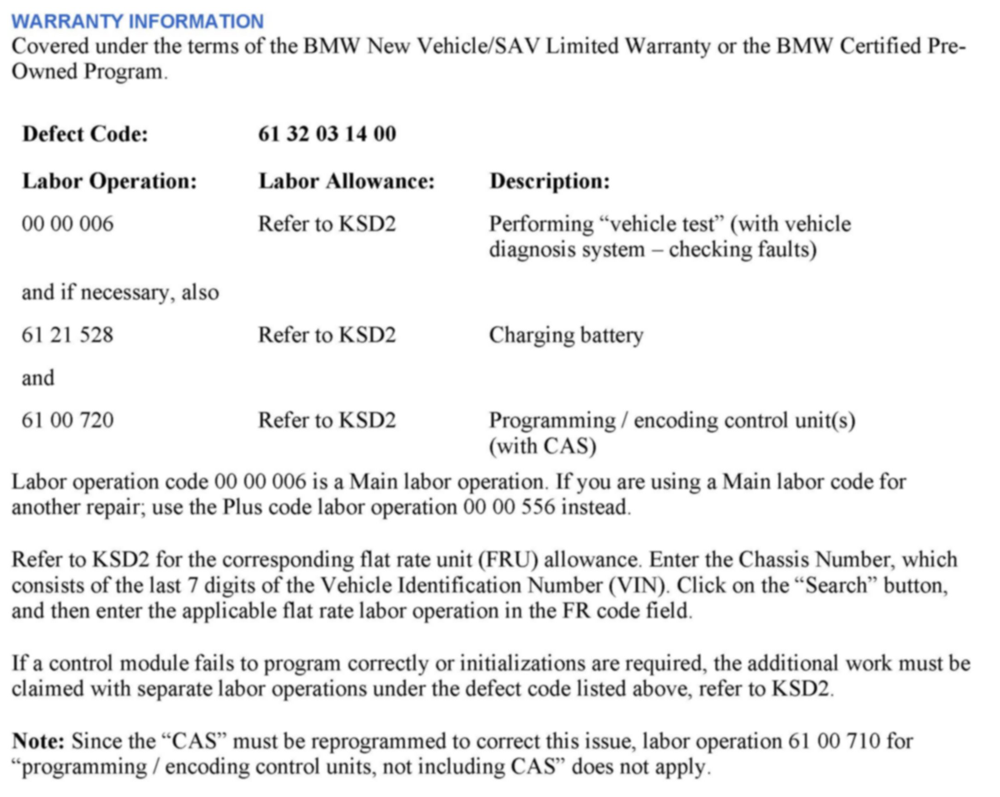

Antitheft Sys- Erroneous 'Remote Control! Do No Switch Off Eng'
SI B61 33 12General Electrical Systems
November 2012
Technical Service
SUBJECT
Erroneous CC Message "Remote control! Do not switch off the engine" is Displayed
MODEL
E70
E71
E72
E82
E84
E88
E90
E91
E92
E93
Produced from February 28, 2007 to November 9, 2012
SITUATION
An erroneous CC message, "Remote control!" Do not switch off the engine" is displayed in the Central Information Display (CID).
The engine can still be started, even with the CC message displayed.
CAUSE
Car Access System (CAS) software error
PROCEDURE
1. Perform a vehicle test using ISTA and diagnose any faults related to the CAS or remote control systems.
Note:
When the ISTA system message displays: Battery voltage only "XX.XX" V. Please connect charger. Note the displayed battery voltage reading in the repair order comments section
2. Program the vehicle using ISTA/P 2.48.1 or later.
Note that ISTA/P will automatically reprogram and code all programmable control modules that do not have the latest software.
For information on programming and coding with ISTA/P, refer to CenterNet / Aftersales Portal / Service / Workshop Technology / Vehicle Programming.

WARRANTY INFORMATION